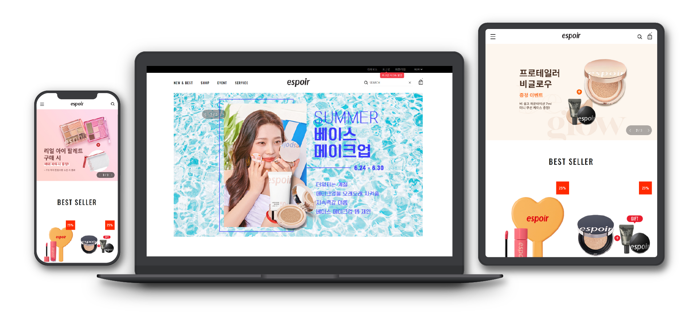
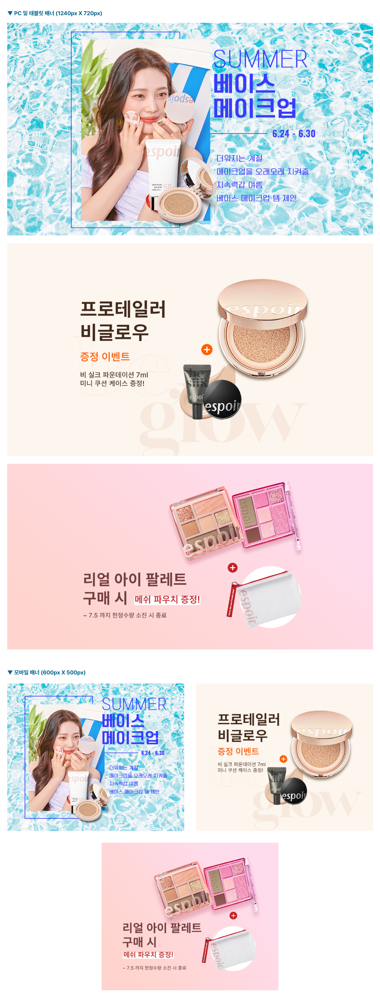
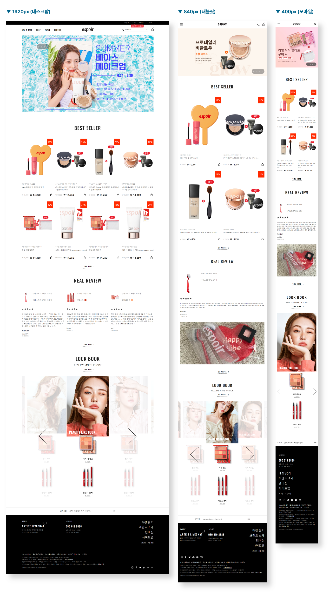

Responsive Web
에스쁘아 모작 사이트
사이트 바로가기

구분
웹표준
웹호환성
반응형
기여도
배너 디자인 100% + 퍼블리싱 100%
사용 언어
HTML5 + CSS3 + jQuery
사용 라이브러리
slick
사용 프로그램
포토샵 + 일러스트레이터 + XD + Visual Studio Code
프로젝트 소개
에스쁘아 사이트를 모작한 반응형 사이트입니다.
디자인은 똑같이 했지만 구조는 제가 스스로 퍼블리싱했으며 배너 디자인도 100% 스스로 디자인했습니다. 웹표준을 준수했으며 배너 디자인은 제품 각각의 이미지를 신경써가면서 디자인했습니다.
작업하면서 특히 신경쓴 부분은 검색창을 눌렀을 때 옵션창이 나오는 부분과 REAL REVIEW에 자세히보기를 눌렀을 때 나오는 리뷰의 모달창에 특히 신경을 써서 작업했습니다.
주요 컬러
사용 폰트
Oswald Medium 500
Noto Sans KR 노토 산스 Light 300
Noto Sans KR 노토 산스 Regular 400
Noto Sans KR 노토 산스 Medium 500
디자인 시안

